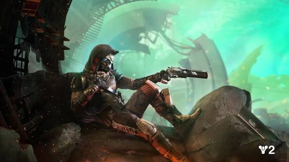

Cayde-6

descrição da ikora destiny 2Você disse: descrição da ikora destiny 2descrição da ikora destiny 2Ikora Rey é a mentora da Vanguarda dos Arcanos em Destiny 2 e uma das Guardiãs mais poderosas e respeitadas da Última Cidade.Papel e LocalizaçãoFunção: Líder e representante da classe dos Arcanos, além de supervisionar Os Encubiertos (a rede de inteligência secreta da Vanguarda).Localização: Ela fica na Torre, onde gerencia as aquisições de habilidades de Luz e itens associados.Origem: É uma humana ressuscitada por seu Fantasma, chamado Ofiúco, e ex-aluna do lendário Osíris.Personalidade e HabilidadesPersonalidade: Conhecida por ser analítica, introspectiva e extremamente astuta. Ela equilibra a seriedade do Comandante Zavala com uma postura firme diante das crises do sistema solar.Poder em Combate: Possui uma força quase imensurável, sendo famosa por dominar a Sincronia de Luz, combinando habilidades de Arco, Solar e Vácuo com uma velocidade impressionante e sem tempo de espera.Para conhecer mais sobre a personagem e sua trajetória no universo do jogo, você pode consultar a página dedicada a ela na Ikora Rey - Destinypedia ou conferir detalhes adicionais na Ikora Rey | Wiki Destiny.Fique a conhecer a Ikora no trailer oficial de Destiny 2:0:29Destiny 2 – Fica a conhecer a Ikora [PT]2,6 mil visualizações · há 9 anosYouTube · Destiny 2Se quiser aprofundar o assunto, posso te contar mais sobre:A história de vida anterior da IkoraComo desbloquear habilidades e subclasses com ela no jogoO papel dela nas expansões recentes de Destiny 2YouTube·ImortalGUIA COMPLETO | NOVATOS VISITEM A NOVA IKORAr body e vamos vamos com mais um vídeo aqui na bagaça desse canal para quem não me conhece eu sou mortal trazendo mais vídeo de. 2...6:32DestinypediaIkora Rey - Destinypedia, a wiki de DestinyConteúdo traduzido — Vida passada. Esta seção é um esboço . Você pode ajudar a Destinypedia expandindo-a . Em sua primeira vida, a mulher que mais tard...FandomIkora Rey | Wiki Destiny | FandomIkora é uma Condutora da Tempestade e ajuda na luta contra a invasão Cabal em Destiny 2. Um dos ornamentos de sua arma preferida c...Mostrar tudofaz uma descrição de 6linhasIkora Rey é a mentora da Vanguarda dos Arcanos na Torre de Destiny 2.Ela lidera Os Encubiertos, a rede de inteligência secreta dos Guardiães do jogo.A personagem é ex-aluna do lendário Osíris e possui o Fantasma chamado Ofiúco.Destaca-se por ser extremamente analítica, estratégica, séria e profundamente respeitada por todos.Em combate, ela demonstra um poder imensurável ao dominar perfeitamente todas as subclasses.Sua força permite conjurar habilidades de Luz devastadoras sem sofrer tempo de espera.Se quiser, posso te ajudar com outras informações sobre Destiny 2:Explicar o papel atual dela na expansão mais recenteMostrar os itens e subclasses de Luz que ela vendeContar a história de outros líderes da Vanguarda, como Zavala ou Cayde-6resume o Cayde-6Cayde-6 foi o mentor da Vanguarda dos Caçadores em Destiny 2, conhecido por ser o líder mais irreverente, carismático e audacioso da Última Cidade.Quem foi Cayde-6Classe: Um Exo Caçador lendário, famoso por sua personalidade sarcástica, piadas constantes e amor pelo risco.Arma: Portava o icônico canhão de mão Ás de Espadas, sua marca registrada no combate.Morte: Foi assassinado por Uldren Sov e os Desprezíveis durante a fuga da Prisão dos Anciões na expansão Renegados (2018).Retorno: Sua consciência retornou temporariamente como uma manifestação da Luz dentro do Coração Pálido na expansão A Forma Final (2024).Se quiser saber mais sobre a trajetória dele, posso detalhar:O que aconteceu com o Ás de Espadas após a morte deleO papel dele na expansão recente A Forma FinalA história de seu fiel animal de estimação, a galinha Coronel6 linhas baybeCayde-6 foi o lendário mentor Exo da Vanguarda dos Caçadores em Destiny 2.Era o personagem mais carismático, piadista, audacioso e amado de toda a franquia.Carregava sempre seu icônico e poderoso canhão de mão chamado Ás de Espadas.Sua morte trágica na expansão Renegados marcou profundamente a história do jogo e dos jogadores.Ele cuidava com muito carinho de uma galinha de estimação chamada Coronel.Retornou como uma emocionante manifestação da Luz na expansão A Forma Final.